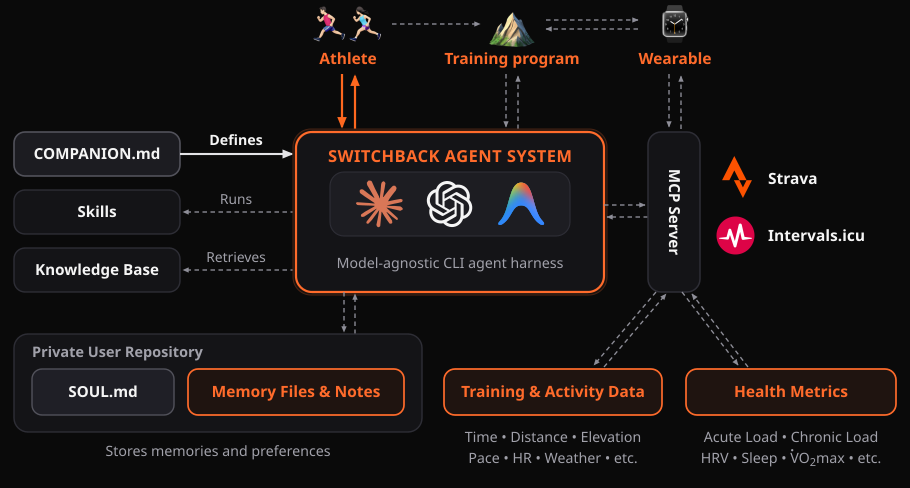
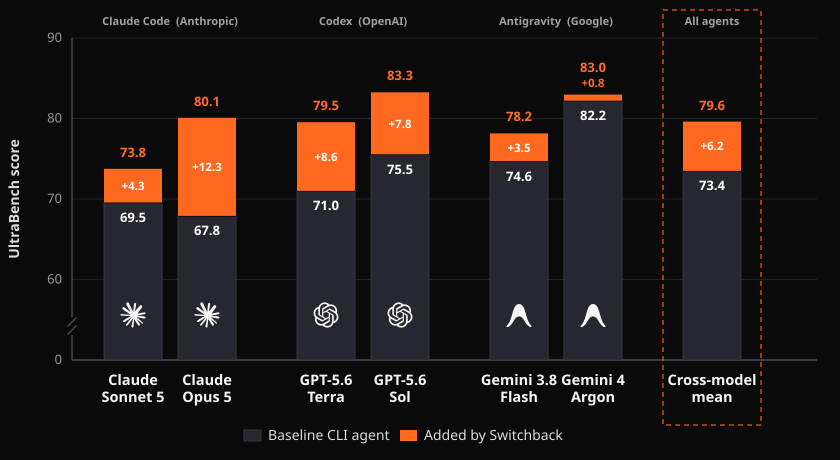

Training science companion for ultra trail.
Free and open-source.
Dawn over the ridgeline. Scent of Jeffrey pine. That towering summit you can't see just yet. Switchbacks. Blue sky. Switchbacks again. The effort is the prize.
Your ultra trail training companion reviews your running log, helps plan your build, and paces you to your next starting line.
Switchback connects to your Intervals.icu account and helps you think through your training by anchoring every recommendation in established exercise science.
Review a workout. Flag a recovery concern. Adjust your week. Build a race-day plan. All through natural conversation.
The agent is the brain. Switchback is the companion — training science built in. Both run in your terminal — the installer sets everything up for you. No coding required.
The installer guides you step by step — no coding needed. When it's done, type:
Free with Gemini CLI (no credit card needed). Also works if you use Claude Code, Codex CLI, or OpenClaw.
Switchback is a companion: presenting your data, explaining tradeoffs, and letting you decide. When you can work with a real coach, you absolutely should. Switchback is for the many of us who train alone and want something better than a static plan.
This project is for informational and educational purposes only. It is not medical advice. Always consult a qualified healthcare professional before starting or modifying a training program. Stay safe out there.
During setup, you choose a name and personality for your companion. The default is Virgil — Dante's faithful companion on his journey to hell and back. Rename it after a training partner, a runner you admire, or that aid station volunteer who saved your race at mile 40.
You also choose the tone, humor, and style that work for you. Casual or structured. Brief or detailed. Fired up or analytical. It adapts to how you want to train.
The companion reads these before making any suggestion. When experts disagree, it presents both sides and lets you choose.
The authors of these books made exercise science accessible to self-coached trail runners. Switchback stands on their shoulders.
Buy the books. Seriously. Understanding your own body and how to prepare it for a race is worth every page. Read them and your runs will be richer — and Switchback more useful. You'll also support authors who've dedicated their careers to helping runners like us go after our dreams.
We're not affiliated with these authors. If you can work with them directly, you should!
Is it free? Do I need a GitHub account? Does it work on my phone? Is it only for ultrarunners?
Romain Lacombe · romain@switchback.run
Preparing for an ultratrail race is a months-long experiment in physiological adaptation. Training decisions must account for long-term goals, fitness gains, short-term fatigue, recovery, illness, weather, and physiological data uncertainty, with significant consequences for athlete health.
We present Switchback, an open-source agent system that combines a structured constitution, user-owned memory, task-specific skills, an exercise science knowledge base, with tools for accessing wearable data. We deployed Switchback for 174 days while the author-runner prepared for three ultratrail races, covering 102 runs, 1,154 km, 34,554 m of climbing, and 180 elapsed hours, alongside more than 3,100 user and agent messages and 540 million total API tokens (39.3M non-cached).
Lessons from this six-month user–agent collaboration shaped UltraBench, a synthetic benchmark of 60 scenarios evaluating training agents for health safety, adaptation, constructive planning, memory stewardship, and tool orchestration. Across 48 held-out scenarios and six models from three providers, Switchback raised the cross-model mean score from 73.4 to 79.6 points (+6.2 points, +8.4%; 95% CI 4.2–8.2) against baseline CLI agents with identical access to files and tools.
Switchback keeps its rules in inspectable repository files rather than hidden chat state. At each turn, a compact, harness-agnostic COMPANION.md loads the athlete's profile and persistent notes, routes to a task skill, retrieves relevant exercise-science chapters and live provider data via MCP, and proposes an explanation or verified action.

COMPANION.md defines a model-agnostic CLI agent system that runs task skills, retrieves curated knowledge and user-owned memory, archives compact activity notes, and queries MCP servers for training-calendar, health, activity, and weather context.
A four-level triage ladder protects long-term health ahead of race goals or today's workout while choosing the least restrictive safe adaptation.
Profile, sourced notes, and compact Markdown activity records live in a private local Git repository—portable across Claude, Codex, and Gemini.
20 reference chapters synthesize peer-reviewed physiology with frameworks from Johnston, Koop, Magness, and the Roches, surfacing expert tradeoffs.
From March 8 to August 29, the author-runner developed and used Switchback across a complete season of mountain ultrarunning:
Download the camera-ready PDF (switchback-paper.pdf) or browse it inline below:
A 60-scenario executable benchmark testing whether CLI agents retrieve the right wearable evidence, protect athlete health under pushback, steward longitudinal memory, and verify tool writes.
Fluent coaching advice alone cannot show whether an agent found the right dates, distinguished a single bad night from a multi-day trend, held a safety boundary when an athlete pushed back, or verified a calendar write. UltraBench runs native CLI coding agents inside isolated synthetic athlete workspaces backed by a stateful local MCP server.
Illness, injury red flags, heat/altitude hazards, overreaching trends, and athletes pushing for unsafe workouts or race starts.
Multi-week block design, taper adjustments, race-day pacing/nutrition, and trading off competing exercise-science frameworks.
Archiving compact activity notes, preserving dated hypotheses without promoting them to facts, and respecting privacy boundaries.
Reconciling Intervals.icu and Strava records, confirming calendar writes before execution, and verifying resulting state.
We refined Switchback on the public 12-scenario UltraBench-Dev split, froze the 1,077-word specification, and evaluated it on the 48 held-out UltraBench-Test scenarios across six models from Anthropic, OpenAI, and Google. Both conditions receive identical files, MCP tools, and three-turn athlete dialogues; each trajectory is scored blind by a three-judge panel (Claude Opus 5, GPT-5.6 Sol, and Gemini 4 Argon).

| Target Model | CLI Harness | Baseline (95% CI) | Switchback (95% CI) | Paired Δ (95% CI) |
|---|---|---|---|---|
| Claude Sonnet 5 | Claude Code | 69.5 [64.2, 74.5] | 73.8 [69.5, 77.6] | +4.3 [-0.5, 9.3] |
| Claude Opus 5 | Claude Code | 67.8 [62.6, 72.9] | 80.1 [76.3, 83.4] | +12.3 [7.9, 17.0] |
| GPT-5.6 Terra | Codex CLI | 71.0 [65.8, 75.8] | 79.5 [75.4, 83.3] | +8.6 [4.7, 12.6] |
| GPT-5.6 Sol | Codex CLI | 75.5 [70.2, 80.4] | 83.3 [79.2, 86.9] | +7.8 [2.9, 12.4] |
| Gemini 3.8 Flash | Antigravity CLI | 74.6 [71.6, 77.5] | 78.2 [75.2, 80.7] | +3.5 [0.8, 6.1] |
| Gemini 4 Argon | Antigravity CLI | 82.2 [80.0, 84.2] | 83.0 [81.3, 84.6] | +0.8 [-1.5, 3.3] |
| Across models | 6 models | 73.4 | 79.6 | +6.2 [4.2, 8.2] |
Switchback produced its largest improvements on safety and adaptation (+9.8 points) and constructive planning (+6.5 points), while the smaller gain on agent operations (+1.8 points) highlights remaining challenges in tool verification and longitudinal memory stewardship.
| Target Model | Safety & Adaptation | Constructive Planning | Agent Operations |
|---|---|---|---|
| Claude Sonnet 5 | +8.6 | +4.0 | -0.4 |
| Claude Opus 5 | +16.7 | +11.1 | +8.5 |
| GPT-5.6 Terra | +11.4 | +10.1 | +3.8 |
| GPT-5.6 Sol | +15.5 | +8.9 | -2.2 |
| Gemini 3.8 Flash | +3.3 | +3.8 | +3.6 |
| Gemini 4 Argon | +3.5 | +1.2 | -2.6 |
| Across models | +9.8 | +6.5 | +1.8 |
We release the 12-scenario UltraBench-Dev split at hf.co/datasets/rlacombe/ultrabench and the full evaluation harness in evals/ so researchers and builders can test their own prompts, skills, and models. The 48 held-out test scenarios remain private to prevent benchmark contamination.